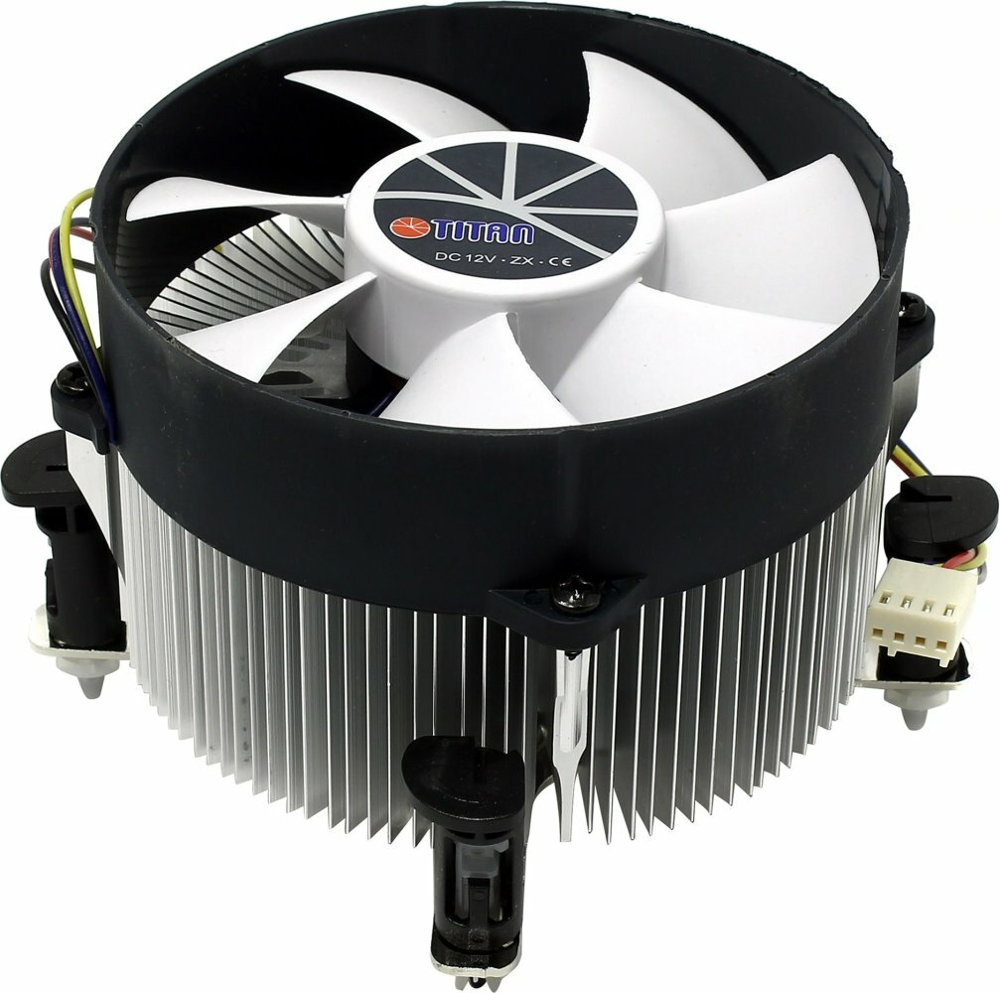
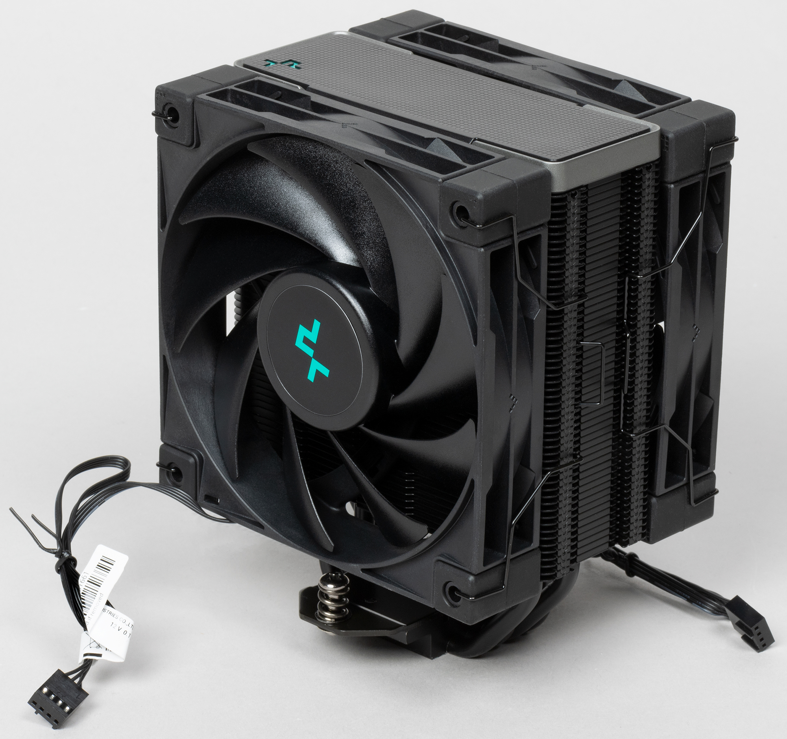
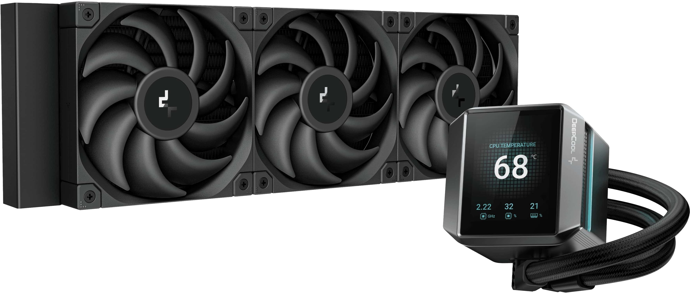

Кулер
Кулер — это система охлаждения процессора, которая направляет горячий воздух, генерируемый процессором, с задней стороны системного блока, обеспечивая эффективное охлаждение.
Как правильно подобрать кулер:
1. Сокет материнской платы
• Убедиться, что сокет кулера совпадает с сокетом материнской платы. Если нет, потребуется специальный адаптер
2. Тепловыделение (TDP)
• Определить TDP процессора. Кулер должен быть рассчитан на тепловыделение, превышающее TDP процессора на 10–15%, а при разгоне — на 30–50%
3. Габариты
• Измерить пространство внутри корпуса компьютера, чтобы убедиться, что кулер поместится и не будет перекрывать доступ к другим компонентам
4. Уровень шума
• Обратить внимание на уровень шума кулера. Уровень шума до 20 дБ подойдет для тихих систем
5. Производительность и материалы
• Выбирать кулеры с цельным медным основанием для лучшего теплоотвода
• Обратить внимание на вентиляторы с большими лопастями и качественными подшипниками для снижения шума и увеличения срока службы
Существуют разные типы кулеров
Боксовый кулер

Башенный кулер

Водяной кулер
